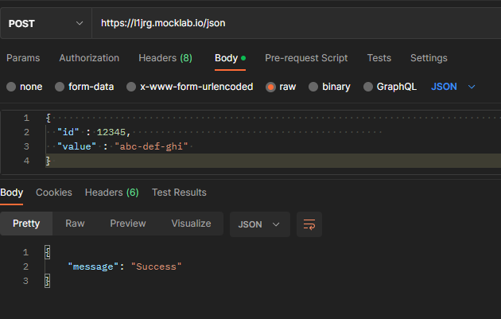

Click on each question to open the collapsible div :)
Describe the concept of throttling in APIs.
=====
********
What is an API
-----
Before attempting to define what throttling is, we need to udnerstand the concept over which it takes place: APIs. They stand as the initials for Aplication Programming Interface
which basically means that the APIs are the mechanisms that make possible the communication between two pieces of software (which can be usnderstood as isolated components) using a common protocol
defined by the own API; then, both parties can understand each other 'cause they know over which endpoint (an address or path to communicate) the communication will take place, what parameters should be passed/requested and the method to use.
That said, APIs can be explained as having two main actors, the client, which sends requests, and the client, which is responsible for satisfying the client's request by returning a given response back to the client.
Throttling
-----
Then, understanding that APIs behave in such a way that the communication between parties is done though a call to endpoints, each of these calls (also known as requests) require a percentage of the server's computational resources to handle and respond to them;
if a user or a small number of them starts to make a big number of requests to the server, it will degrade its bahavior due to the extra load it has to handle for the requests done by these few users, making that users with a requests number closer
to normal have few resources available to be responded. This can also happen with clients that have faster connections than most other clients, allowing them to make a higher number of requests over time.
A quote that caught my eye and I think makes the point clear is the following: "Throttling is a policy that the Server enforces and the Client respects", this makes total sense when we consider that throttling is an option available to solve scenarios where users make too many requests by implementing an API usage limit to users in order to guarantee that their calls to the server do not degrade the performance of the server to handle requests from other clients. This rate limiting can be understood as a
quota or number of API requests that someone can make based on a time period, which can be an hour, day, week, etc. effectively making these throttled clients know that their behavior is affecting the server's capacity by returning an error code and the time they will be unable to make more requests.
Throttling works as follows:
- A user makes a call to the API requesting a service from the server
- The API's throttling logic verifies if the incoming request exceeds the allowed number of API calls
- If request is within the limits, the request will be satisifed as usual
- Else, an error response is returned to the requester (user), having to wait for an specified period of time or pay to be able to make more API calls
Note that the specified number of requests per period of time and the buffer where a user is blocked from making more calls are defined in the so called SLA (Service
Level Agreement) of an API
I've suffered from this mechanism several times while using the APIs of music services like LastFM or Spotify, where after making too many requests in a few minutes
(both GET and POST), I was blocked for a period of time getting a 429 code (Too Many Requests), which for me as user resulted in a long pain to be able to use it again,
but from the server's perspective, I see that it is a way to ensure that stubborn people like me don't increase the traffic that the server receives and creates a that
can have consequences for the rest of users.
Then, as all types of techniques in software, there are trade-offs when it comes the time to use throttling, between the advantages of it are:
- A better overall performance of the system by preventing it to work in overloaded conditions where it has to handle far too many unthrottled requests.
This comes handy when an application has a fair amount of users, which by default will make the server's behavior slower; with the help of throttling this can ensure that
each user receives the level of service it has agreed upon the use of the API. This as also closely related to the hability of a system to scale securely.
- It establishes an extra layer of security to the server's integrity by being able to mitigate and stop attacks that could happen like DDoS (Distributed Denial
of Service) since they require of a bigger than usual amount of requests from different sites; being able to block all of them with a single technique is quite useful
- Since API calls also may have costs associated with them (maybe due to the use of third party providers like AWS), having a way to reduce excesive API calls can
cut down the bills for these services, which is always good.
While, some of its disadvantages include
- A challenge when it comes to distributed systems, where the throttling algorithm has to be implmeneted for the whole system, requiring a way to syncrhonize each
of the servers requests that have been done by each user to limit their attempt to make calls to another server when one of them blocks him. This can generate race conditions and
inconsistencies in the service.
- Clients need to be aware of the quotas or limits imposed to them by the API specification, which can cause trouble if they don't understand why or don't take it into account
into their own software.
Types/techniques of throttling
-----
From what I could find, there are at least four throttling algorithms:
- Leaky bucket: For instances, there's a FIFO queue that has a fixed size and stores the incoming requests, then when a request comes and fills the queue size, all other requests will be discarded
. This one, while easy to implement, has the drawback of admitting starvation due to a big request that takes a long time to process, allowing the queue to get filled and all incoming requests
after that will be rejected.
- Fixed Window: This technique divides the time into fixed units, where the user is able to do N number of calls after being throttled whithin that time unit, this solves the starvation problem but
has the disadvantage of allowing bursts of requests to be done over a short period of time, increasing the traffic to the server (e.g. will be when the client makes 100 requests at
11:59 and another 100 at 12:00 to an API with limit of 100 calls per hour, allowing it to have 200 calls in only 2 minutes)
- Sliding window: Solves the issue by having a window (actually an array) that stores the number of calls whithin the last minute, if a new call is received and the number
of calls in the window is less than the limit, it increases by one that number and processes the call, else it rejects it. It has the disadvantage of being memory consuming due to having a window for each user.
There are also types of throttling, which limit access to specific thing like:
- Rate-limiting: Same as the throttling that has been explained so far
- IP-level: Works either by having a whitelist of IP addresses and blocking all the others, or by limiting the number of requests to certain IPs
- By Scope: Effectively blocking a user with certain level of permissions to make requests to endpoints it does not have access to.
- Concurrent connections:To limit attacks like DDoS, where the limit of connections is fixed forthe number of user that can make connections to the API
Describe the concept of pagination in APIs.
=====
********
When requesting something from a server, whether it be images, json files or any data from a database, there are times when this data has way too many results that could
make the API to drain its resources trying to get such data and then send it back to the requester. Then, pagination comes to limit the number of results that a request can
have, by doing so, it is segmenting these results into independent chunks of data that are numbered just like the pages of a book to let the user know which of these pages
it is getting as a response.
Thus, pagination adds another level of abstraction to the data, providing a way to order it even when there's no order in sight by just splitting and labeling it, which not only
makes it easier to handle, but also reduces the bandwidth required to transfer it (only small pieces are sent at each request instead of all of it). However, as always in almost anything, there's a big
BUT in pagination due to the following:
- It having to handle many requests for the same query but over a different page, increasing the traffic received by a user.
- Another drawback is the fact that, if not properly handled, there can be repeated or missing data returned to the client due to addition or deletion of data to a page while a
request to that page (or some page with a lower number) was taking place, creating an inconsistency in the data that the API is able to retrieve.
- Having to define the parameters that will be used to paginate can be hard sometimes, having to be able to understand the type of data, the logic and overhead needed to handle
it and the always present reminder that deprecating endpoints is not feasible nor possible for large systems.
There are several methods, but the most prominent are:
- Offset pagination: Often used along SQL databases, it used the parameter limit and offset to indicate how many results it wants (limit) and starting from where (offset),
which just goes and queries the specified parameters introduced by the user that can sometimes be too large to handle
- Keyset/seek pagination: Paginates by ID, therefore, lets say that a user gets the first page, then it also receives as part of the response the id for the next element, which has to be sent
in the next request to be able to retrieve the next page. It has some potentially insecure features like having to expose the IDs of data records, sort the data, as well as being
prone to have inconsistent data due to insertions or deletions taking place after a request has been resolved, giving an ID that could no longer be the next one or no longer exist
- Time-based pagination: Paginates based on creation timestamp.
Describe the concept of callback function
=====
********
A callback function is basically a function that is passed as parameter to another with the intention of it being called when the primary function
that received it as parameter finishes its execution or when it needs it. There are both syncrhonous and asynchronous callbacks, the latter being the most useful
due to the asynchronous nature of cloud computing in general.
Lets say that you are calling an asynchronous function that writes something into the database, if you were to call anotehr function that reads the database after calling
the first one, you'll possibly get the previous state of the database because the write function was asynchronous, meaning that it finished after the second one had finished.
To avoid issues like this and be able to provide strong consistency in cases like these, callback funcions can be passed as parameters to asynchronous functions, that way, the
callback will be executed only when the asynchronous function has finished its execution.
This also enables to control asynchronous flow in a straightforward manner by being able to concatenate callbacks (just like in the .then in JavaScript) and encapsulate
the behavior of the different calls in a way that makes easier the abstraction added by asynchronous execution of functions. This also comes handy when paralelization is an option,
just like in applications like neural network training, where Tensorflow or PyTorch enables you to train a network over different cores, but still have callback functions that
perform actions like saving epochs, logs or print statistics when all the threads have finished their execution.
Another key feature provided by callback functions is the fact that, as mentioned by baeldung, tasks that have callbacks can run on the
background, allowing the user or system to perform other tasks while the asynchronous one is waiting to be fnished, after which another set of instructions can be performed by the callback
function without the need of blocking the functionality of the system on the wait or a response.
There are multiple programming languages like C, Python or JavaScript that have the capability to perform callback functions, and this is mostly because they have the feature of handling
functions as objects that can be treated in the same way as classes, variables or used in expresions or arguments (often called first-class objects) and can be passed on
both synchronous and asynchronous functions.
An example of a callback function being used on an asynchronous function can be seen next:
```shell
function doSomethingAfter(param) {
// does some logic with param
}
// the async function receives the callback reference and another parameter
async function ImAnAsyncFunc(callback, a_param) {
// the async behavior takes place
const res = await doSomeAsyncStuff(a_param);
// callback is performed after the asynchronous behavior has finished
callback(res['param']);
}
ImAnAsyncFunc(doSomethingAfter, 'stuff');
```
Describe the concept of cold start in AWS Lambda.
=====
********
First of all, an AWS lambda is basically a function that is triggered whenever an action that is observed by that lambda occurs. They are said to be serverless because
they work in such a way that the infrastructure and networking overhead needed to execute to execute the code is invisible to us, which in turn just have to focus
on code. A lambda function runs in its own container, which is executed on a cluster of machines managed by AWS which allocate memory and processing capacity to the container when it
is running.
A cold start occurs when a Lambda has to process its first request, this initial request takes longer than usual due to the nature of the lambda service:
- Since it is inside a container that runs on a host machine, such host machine (better said machines in an EC2 fleet) has to be allocated to the function,
- The container has to be downloaded into the host machine
- It has to undergo a setup based on its configuration, after which the function has to be initialized to be able to be used.
All this process makes the cold start longer than usual (it is starting from zero) and has a big impact on the processing of that request that originated
the instantiation of the lambda.
These cold starts can also happen when the Lambda function hasn't been used for a period of time; lets say that I triggered the function at 12:00, they function is said to be on
a warm state (instantiated and ready to process data) for a period of time after it is removed in order to be able to execute another function, if that period is 30 minutes, then after 12:30 if no more events triggered the function, I will have no more EC2 instances with the lambda function
running on them, so if a new event triggers the lambda at 12:31, it will have a cold start again.
On the contrary, if a new event triggers the Lambda within the specified period of time before being removed, then the countdown starts from that latest call, allowing
the Lambda to remain in a warm start for future executions.
Describe each HTTP methods.
=====
********
To describe what are the HHTP methods it is needed to udnerstand what HTTP is in the first place. It stands form HyperText Transfer Protocol, which is a protocol
for the applicatio layer that allows web browsers to communicate with web servers. It basically defines the rules that both client and server have to follow in order
to understand what each wants (client wants something from server, server needs to understand what client wants and client needs to understand the server's response).
Into this set of rules are methods that enable the client to ask for specific actions to the server, these (of course) are the HTTP methods:
GET
----
It is basically the primary mechanism that allows information retrieval from the server, when performing a GET request over a URL, you're basically asking to get a copy of that
content into the local machine, whether it be a webpage (like the one you're reading this), media, raw data, etc. An example will be to send a GET request for this assignment page,
the implementation varies from language to language but the logic is the same.
```shell
GET kaladin.cetystijuana.com/assignments/assignment-4.html -> returns this page
```
It can also use a series of parameters passed in the URL (the path to the endpoint) that indicate a key-value pair of the things that the server can use to filter and get what the client wants
```shell
GET www.youtube.com/results?search_query=burial-untrue -> will return the page for youtube with a query parameter for 'burial untrue'
```
HEAD
----
Quite similar to the GET method, but it does not have any response body, basically validating that the resource exists before calling it with a GET method.
It returns several important things about what we want to get, like the type of data and its size. An example can be seen in the following image, which
does a HEAD over this webpage and return some data about it.
It has a series of rules to follow, which include the fact that it cannot be used to process sensitive data or modify data in the server
POST
-----
This method creates a new resource on the backend by sending the data that will contain such new resource. It is said to not be idempotent because
it alters the state of the database and does not generate the same result every time (each time, the state changes).
It usually receives data inside the body of the request, such data and its fornatting is transparent to the user and can process sensitive data and does not have restrictions about length of the
body

The previous example image uses POST to create a new record into the test url https://l1jrg.mocklab.io/json by passing the JSON object
with id and value, and returning a message whose body contains the message success.
PUT
-----
This method is used to update an existing resource and replace its entire content by sending client's data. Ia a modification of POST in the sense
that will carries data from client to server in its body, it does not create a new record, entry or row, but modifies an existing one, therefore
it is said to be idempotent, because always yields the same result.
PATCH
-----
Not as common as GET and POST, but is used to update data in a partial form; in a similar way as PUT, it modifies an existing record, however, the key diference is in the fact that
PUT requires to send all the data for the modified record to the server because it is replacing it completely, PATCH on the other hand just sends the data that
it wants to modify, reducing the payload.
OPTIONS
-----
This method is used to retrieve information regarding the communication options avaibale for a given URL, namely, the HTTP methods that such URL allows
to use. It has the feature of getting this information for either a single endpoint or the whole server. As you can see in he following image, an
OPTIONS request returns allow methods OPTIONS, GET, HEAD and POST for example.org
DELETE
-----
This method basically allows the client to tell the server to delete a specified resource, being idempotent by the fact that after n number of
calls always will delete the resource (if exists), returning the same result.
TRACE
-----
This is a method that should be only used for debugging purposes due to its hability to respond with the same request that the client has sent before,
allowing to know if it was succesful or not. The expected behavior for it is to receive the same message that was sent.
CONNECT
-----
It is basically a way to tell the server that the client wants to initiate a connecteion between them, creating a tunnel (bidirectioanl communication instance)
that both of them can use to transfer messages or files.
Describe how you can automate a deployment of a static website to S3
=====
********
There are several ways to automate this process (which basically consists on making the latest changes on the website available to the public), these options include
- A CI/CD (Continuous Integration/Continous Deployment) through AWS CodePipeline
- Write a script that does it automatically
The easiest of them is clearly the script, which can be written in bash and will just synchronize the changes to the s3 bucket as can be seen next:
```shell
#!/bin/bash
# Store the currect working directory into the variable dir
dir="$(pwd)"
# define a function that sends the contents of the current directory to the bucket with
# name kaladin.cetystijuana.com using the credentials on profile kaladin12
# making use of aws's s3 service known as sync, which synchronizes the whole folder
function deploy(){
aws s3 sync . "s3://kaladin.cetystijuana.com" --profile kaladin12
}
# check whether the current directory is where the website is located
if [ $dir == "~/2/website" ];
then
# if so, deploy by calling the deploy function
deploy
else
# else change directory and deploy
cd ~/2/website;
deploy
fi
```
BUT, this has the pitfall of not being able to manage versions, to solve it, we can use the CI/CS strategy by means of a repository and AWS CodePipeline
Read the Real-world Engineering Challenges #8: Breaking up a Monolith article and write a summary and opinions about it.
=====
********